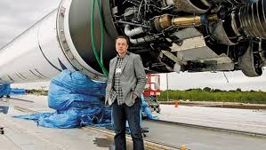

Planes Futuros de Elon Musk y SpaceX en Cohetes y Exploración Espacial
📅 Visión General de los Próximos Años (2025–2040)
Elon Musk ha dejado claro que su misión principal con SpaceX es hacer de la humanidad una especie multiplanetaria. Para lograrlo, SpaceX está planificando:
Dominar completamente la reutilización orbital y suborbital.
Lograr vuelos diarios y luego múltiples por día con Starship.
Construir infraestructura en órbita y en la Luna.
Enviar misiones tripuladas a Marte en los años 2030.

🧪 1. Starship: La Plataforma del Futuro
Starship es la piedra angular de todos los planes futuros. Sus capacidades van más allá de lo que cualquier sistema ha ofrecido hasta ahora.
🛰️ Objetivos a corto plazo (2025–2026):
Vuelos orbitales regulares: Validación total del sistema Starship + Super Heavy.
Reutilización completa: Aterrizajes repetidos de ambas etapas (al estilo Falcon 9, pero más ambicioso).
Reducción del tiempo entre lanzamientos: De semanas a horas.
Instalación de torres de captura "Mechazilla" para atrapar los boosters en el aire.
🧑🚀 Objetivos a medio plazo (2026–2030):
Misión Artemis III: En asociación con la NASA, Starship servirá como módulo de aterrizaje lunar (HLS) para llevar humanos a la Luna.
Primer alunizaje previsto entre 2026 y 2028.
Módulos Starship especializados:
Tanques de combustible para reabastecimiento en órbita.
Estaciones espaciales modulares.
Starships tripulados con escudos térmicos avanzados.
Starships de carga para infraestructura lunar o marciana.
🌐 Objetivos a largo plazo (2030–2040):
Construcción de bases permanentes en la Luna.
Misiones tripuladas a Marte.
Primer vuelo no tripulado a Marte: ~2030–2032.
Primer vuelo tripulado: ~2035–2037 (estimaciones actuales).
Objetivo a largo plazo: ciudad autosuficiente en Marte con miles de personas.
💡 2. Repostaje Orbital: Clave para Marte y la Luna
Uno de los avances tecnológicos más importantes que SpaceX planea implementar es el repostaje en órbita, algo nunca antes realizado.
¿Cómo funcionará?
Una Starship lanza desde la Tierra y entra en órbita.
Varias "Starship Tankers" la siguen y la reabastecen en órbita.
Esto le da el combustible necesario para viajar hasta Marte, la Luna o más allá.
Estado actual:
SpaceX ha realizado pruebas en tierra y está desarrollando sistemas de transferencia criogénica.
Las misiones de repostaje serán clave para la sostenibilidad de Artemis y las misiones marcianas.
🛰️ 3. Starlink: Financiar el Futuro del Espacio
El proyecto Starlink (internet satelital) es la fuente de ingresos primaria para financiar Starship y las misiones a Marte.
Objetivos próximos:
Ampliar la constelación a más de 42,000 satélites (MegaConstelación Gen-2).
Proveer conexión de alta velocidad y baja latencia a nivel global, incluso en zonas rurales y desérticas.
Incorporar Starlink en barcos, aviones, vehículos y operaciones militares.
Aplicación estratégica:
Starlink no solo es comercial; también será clave para mantener comunicaciones lunares y marcianas.
Se prevé que Starship lleve satélites Starlink V3 más grandes y potentes.
🧭 4. Transporte Terrestre Supersónico y Espacial
Elon Musk ha sugerido que Starship podría servir para transporte intercontinental suborbital.
Ejemplo:
Viaje de Nueva York a Shanghái en menos de una hora usando una trayectoria suborbital.
Esto sería útil para:
Emergencias globales.
Transporte militar.
Viajes comerciales premium a largo plazo.
Desafíos:
Aterrizajes precisos.
Seguridad de los pasajeros.
Reducción de costos operativos.
🌕 5. Luna: Base Científica y Plataforma de Pruebas
Planes lunares:
Construcción de una base lunar que sirva como campo de pruebas para tecnologías marcianas.
Despliegue de hábitats, generadores solares y sistemas de soporte vital.
Starship servirá para transportar cargamento y tripulación en grandes volúmenes.
Alianzas:
NASA (Artemis III y posteriores).
Posibles acuerdos con ESA, JAXA y empresas privadas.
🔴 6. Marte: Colonización Multigeneracional
La visión a largo plazo de Elon Musk es clara: colonizar Marte.
Objetivo general:
Enviar miles de Starships durante ventanas de lanzamiento que se abren cada 26 meses.
Establecer una ciudad autosuficiente con energía, agricultura, reciclaje y producción de combustible (metano a partir del CO₂ y H₂O marcianos).
Etapas previstas:
2028–2032: Misiones de carga (robots, generadores, infraestructura).
2035–2037: Primeras misiones tripuladas.
2040s: Desarrollo urbano, tecnologías de terraformación limitada, sostenibilidad a largo plazo.
💰 7. Financiamiento y Expansión Industrial
Estrategias de Musk:
Reinvertir ingresos de Starlink.
Asociaciones con agencias espaciales (NASA, USAF).
Eventual salida a bolsa de Starlink, si es estable.
Producción masiva: construir 1 Starship por día en los próximos años, desde su fábrica en Starbase, Texas.
🤖 8. IA, Robótica y Automatización en el Espacio
Aplicaciones:
Robots para minería lunar y marciana.
Drones autónomos para construcción.
Vehículos de superficie (rovers) no tripulados con IA avanzada.
Uso de IA para navegación, mantenimiento predictivo y decisiones críticas en misiones de larga duración.
🧬 9. Ciencia, Biotecnología y Experimentos en Microgravedad
SpaceX planea habilitar a científicos privados y públicos para realizar experimentos:
En gravedad reducida (luna y Marte).
En laboratorios Starship con acceso económico.
En colaboración con universidades, farmacéuticas y bioingeniería espacial.
🔭 10. Exploración del Sistema Solar y Más Allá
Aunque el enfoque está en Marte, hay ideas futuras para:
Misiones robóticas a Europa, Titán y Encélado.
Telescopios espaciales gigantes lanzados por Starship.
Instalación de infraestructura para minería de asteroides.
🧩 CONCLUSIÓN: Un Ecosistema Espacial Completo
Elon Musk y SpaceX no solo planean construir cohetes: están diseñando un ecosistema espacial integrado, compuesto por:
Vehículos completamente reutilizables.
Repostaje orbital.
Red de comunicaciones (Starlink).
Bases lunares y marcianas.
Transporte intercontinental.
Producción industrial y científica fuera de la Tierra.
Si todo va según lo planeado, SpaceX transformará la humanidad de una civilización terrestre a una civilización multiplanetaria antes de 2050.